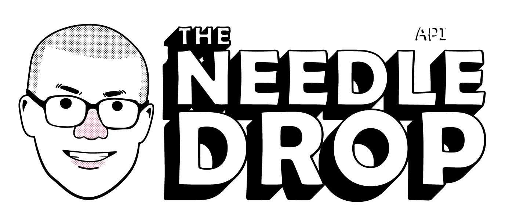

Introduction
Api database based off Anthony Fantano's music reviews. Data includes
artists, album name, and scores for each respective album. Anthony
Fantano, forever!
Listing Reviews
You can list all reviews in the database by sending a get request
to /api/
Adding Reviews
Editing Reviews
You can edit an ingredient in the database by sending a patch request to
/api/
Removing Reviews
You can edit an ingredient in the database by sending a patch request to
/api/